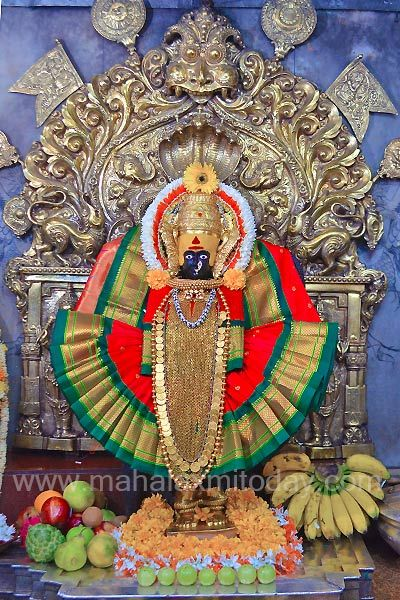

Mahalakshmi Mandir
Goddess Mahalaxmi is regarded as the mother of all the people of Kolhapur. It was built in the 7th Century. In this temple Mahalaxmi, Mahakali, MahaSaraswati are present in the idol form. Two times in the year the sun rays glow on Goddess up to 450 feet. People of Kolhapur live in peace because of Mahalaxmi’s blessing. Shree Mahalaxmi Temple is one of the Shakti Peethas listed in various Puranas of Hinduism. The Shakti Peeth means a place associated with Shakti, the Goddess of Power.
The temple belongs architecturally to the Chalukya Empire and may have to been first built in circa 700 AD. The idol of Mahalaxmi carved in black stone is a three feet in height. The image of the four armed and crowned Goddess is made by gemstone and weight about forty kilograms. The Shree Yantra is carved on one of the walls in the temple. A stone lion, the conveyance of the Goddess Mahalaxmi, stand behind the idol. The crown contains an image of the Sheshnag, the serpent of Lord Vishnu. In her four hands, the deity of Goddess Mahalaxmi holds of symbolic value. The lower right hand holds a Mhalunga ( a citrus fruit), in the upper right, a large mace (Koumodaki) with its head touching the ground, in the upper left a shield (Khetaka) and the lower left, a bowl (Panpatra). Unlike most Hindu sacred images, which face north or east, the image of this deity looks west (Pashchim). There is a small open window on the western wall, through which the light of the setting sun falls on the face of the image for three days around the 21st of each March and September. There are a number of other shrines in the courtyard to the Navagrahas, Surya, Mahishasuramardini, Vitthal-Rakhmai, Shiva, Vishnu, Tulaja Bhavani and others. Some of these images date back to the 11th century, while some are of recent origin. Also located in the courtyard is the temple tank Manikarnika Kund, on whose bank is a shrine to Visweshwar Mahadev.
Navratri Special

Navratra (Nine Nights):This festival is celebrated for ten days during the Hindu month of Ashwin (around October). All the ten days at 9.30 pm the idol of the Goddess is decorated in different forms with flowers and lights and is taken out in procession in the temple complex. Various programs arranged in ten days by Devasthan Committees.Millions of devotees are present on these days from all over India. Lalita Panchami (Fifth Day of the Navratra):On this day litter of Goddess Mahalaxmi procession leaves the temple premises to visit Goddess Tryamboli’s Temple which is at a short distance from the main temple in Kolhapur. Ashtami (Eight day of the Navratra):On this day, the silver representation is placed on a throne and is taken around the town in procession from Mahadwar road, Gujri-Bhausinghji road, Bhavani Mandap (where the goddess is honored with betel leaves and betel nut by distinguished people.